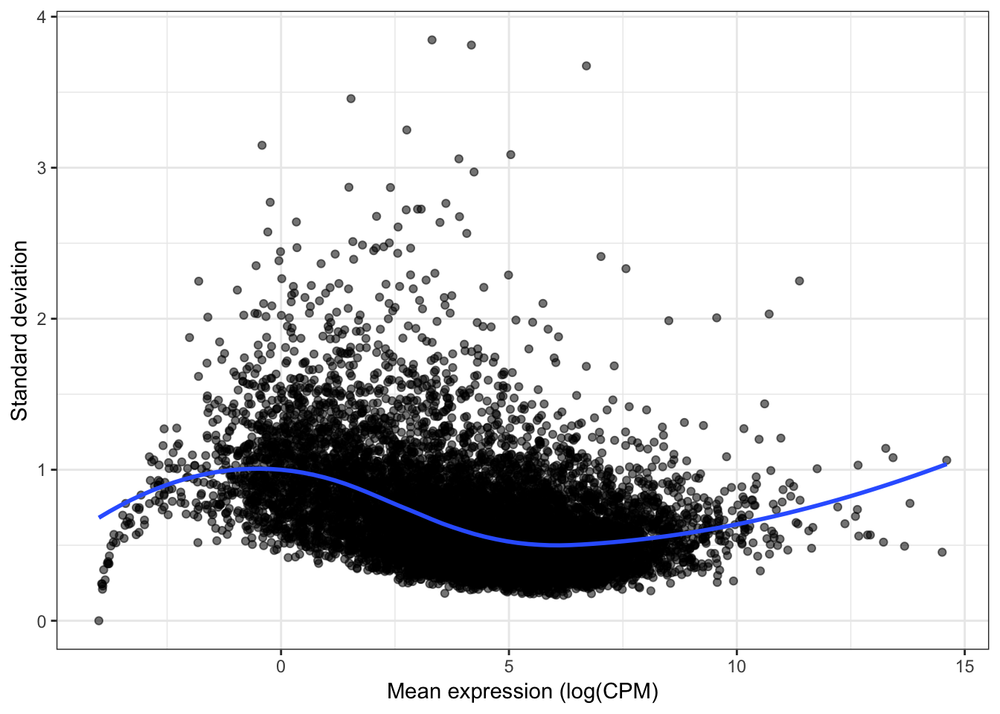
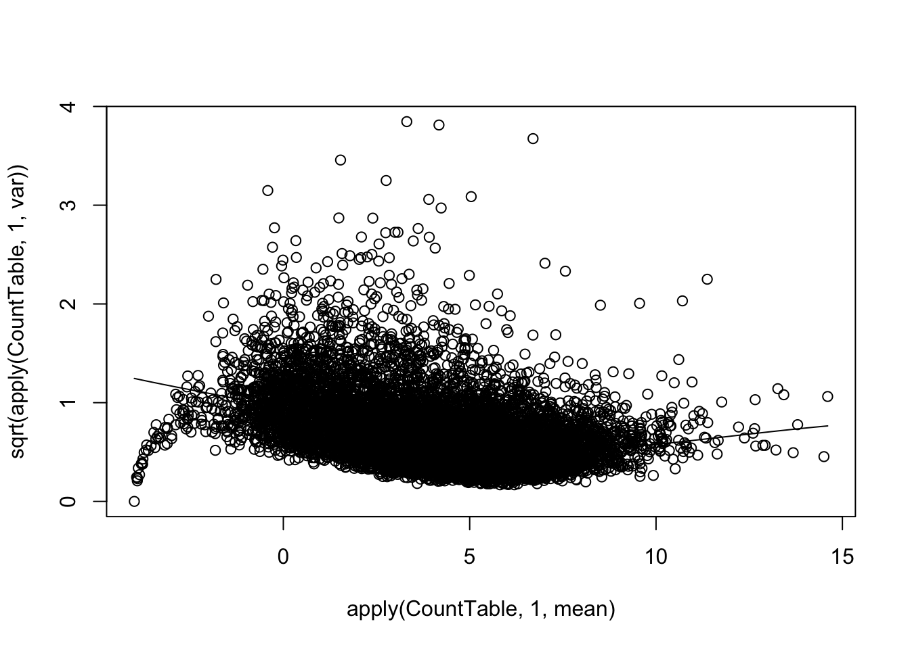

Last updated: 2019-09-13
Checks: 6 1
Knit directory: Comparative_eQTL/analysis/
This reproducible R Markdown analysis was created with workflowr (version 1.4.0). The Checks tab describes the reproducibility checks that were applied when the results were created. The Past versions tab lists the development history.
The R Markdown is untracked by Git. To know which version of the R Markdown file created these results, you’ll want to first commit it to the Git repo. If you’re still working on the analysis, you can ignore this warning. When you’re finished, you can run wflow_publish to commit the R Markdown file and build the HTML.
Great job! The global environment was empty. Objects defined in the global environment can affect the analysis in your R Markdown file in unknown ways. For reproduciblity it’s best to always run the code in an empty environment.
The command set.seed(20190319) was run prior to running the code in the R Markdown file. Setting a seed ensures that any results that rely on randomness, e.g. subsampling or permutations, are reproducible.
Great job! Recording the operating system, R version, and package versions is critical for reproducibility.
Nice! There were no cached chunks for this analysis, so you can be confident that you successfully produced the results during this run.
Great job! Using relative paths to the files within your workflowr project makes it easier to run your code on other machines.
Great! You are using Git for version control. Tracking code development and connecting the code version to the results is critical for reproducibility. The version displayed above was the version of the Git repository at the time these results were generated.
Note that you need to be careful to ensure that all relevant files for the analysis have been committed to Git prior to generating the results (you can use wflow_publish or wflow_git_commit). workflowr only checks the R Markdown file, but you know if there are other scripts or data files that it depends on. Below is the status of the Git repository when the results were generated:
Ignored files:
Ignored: .DS_Store
Ignored: .Rhistory
Ignored: .Rproj.user/
Ignored: analysis/.DS_Store
Ignored: analysis/20190521_eQTL_CrossSpeciesEnrichment_cache/
Ignored: analysis_temp/.DS_Store
Ignored: code/.DS_Store
Ignored: code/snakemake_workflow/.DS_Store
Ignored: code/snakemake_workflow/rules/.eqtl_calling.smk.swp
Ignored: data/.DS_Store
Ignored: data/PastAnalysesDataToKeep/.DS_Store
Ignored: docs/.DS_Store
Ignored: docs/assets/.DS_Store
Untracked files:
Untracked: analysis/20190716_VarianceInsteadOfEgenes_2.Rmd
Untracked: analysis/20190913_VarianceFromNB_model_Comparison.Rmd
Untracked: code/MakeFigureFunctions.R
Untracked: data/GTEx_Analysis_TissueColorCodes.txt
Untracked: data/wgEncodeBroadHmmHsmmHMM.hg19.bed.gz
Untracked: docs/figure/20190913_VarianceFromNB_model_Comparison.Rmd/
Unstaged changes:
Modified: code/snakemake_workflow/Session.vim
Modified: code/snakemake_workflow/rules/eqtl_calling.smk
Note that any generated files, e.g. HTML, png, CSS, etc., are not included in this status report because it is ok for generated content to have uncommitted changes.
There are no past versions. Publish this analysis with wflow_publish() to start tracking its development.
As per Ahbishek’s advice, I should try using a different method of estimating gene variance. That is: I should fit the counts data to a negative binomial and to obtain an estimate the variance of each gene’s underlying gamma distribbution. Here I will try implementing that method, comparing to the previous method, which was to take the residual of a loess fit of the trend between mean(log(CPM)) and standard deviation(log(CPM)).
library(tidyverse)
library(knitr)
library("edgeR")
library(stats)
library(corrplot)
library(gplots)
library("clusterProfiler")
library("org.Hs.eg.db")
library(enrichplot)
# Helper function reference in body of later function
rep.col<-function(x,n){
matrix(rep(x,each=n), ncol=n, byrow=TRUE)
}
# Modified from the function in the PowerAnalysis Rmarkdown.
# Function to return RPKM table from chimp and human datasets (n=38 each)
# Use GenesToKeep argument to subset the same list that I compared for eQTLs
GetCPMCountTable <-function(ChimpCountTableFile, HumanCountTableFile, SubsampleSize, GenesToKeep, ChimpSampleDrop=NULL, HumanSampleDrop=NULL)
#if SubsampleSize parameter == 0, use full table, otherwise, subsample from it
{
FullChimpData <- read.table(gzfile(ChimpCountTableFile), header=T, check.names=FALSE, skip=1)
FullHumanData <- read.table(gzfile(HumanCountTableFile), header=T, check.names=FALSE, skip=1)
if (!is.null(ChimpSampleDrop)){
FullChimpData <- FullChimpData %>% dplyr::select(-ChimpSampleDrop)
}
if (!is.null(HumanSampleDrop)){
FullHumanData <- FullHumanData %>% dplyr::select(-HumanSampleDrop)
}
if (SubsampleSize==0){
CountTableChimp <- FullChimpData
colnames(CountTableChimp) <- paste0("C.", colnames(CountTableChimp))
CountTableHuman <- FullHumanData
colnames(CountTableHuman) <- paste0("H.", colnames(CountTableHuman))
} else {
CountTableChimp <- FullChimpData %>% dplyr::select(c(1:6, sample(7:length(FullChimpData), SubsampleSize)))
colnames(CountTableChimp) <- paste0("C.", colnames(CountTableChimp))
CountTableHuman <- FullHumanData %>% dplyr::select(c(1:6, sample(7:length(FullHumanData), SubsampleSize)))
colnames(CountTableHuman) <- paste0("H.", colnames(CountTableHuman))
}
CombinedTable <- inner_join(CountTableChimp[,c(1,7:length(CountTableChimp))], CountTableHuman[,c(1,7:length(CountTableHuman))], by=c("C.Geneid"="H.Geneid")) %>%
column_to_rownames("C.Geneid") %>% as.matrix()
SpeciesFactor <- colnames(CombinedTable) %>% substr(1,1) %>% factor() %>% unclass() %>% as.character()
d0 <- DGEList(CombinedTable)
d0 <- calcNormFactors(d0)
d <- d0[GenesToKeep,]
mm <- model.matrix(~0 + SpeciesFactor)
# y <- voom(d, mm, normalize.method="cyclicloess", plot=F)
# GeneLengths <- inner_join(CountTableChimp[,c("C.Geneid", "C.Length")], CountTableHuman[,c("H.Geneid", "H.Length")], by=c("C.Geneid"="H.Geneid"))
# GeneLengthMatrix <- cbind(
# rep.col(log2(GeneLengths$C.Length/1000), length(CountTableChimp)-6),
# rep.col(log2(GeneLengths$H.Length/1000), length(CountTableHuman)-6))
# rownames(GeneLengthMatrix) <- GeneLengths$C.Geneid
# y$E <- y$E - GeneLengthMatrix[rownames(y$E),]
return(cpm(d, log=T))
# return(d0)
}
# Modified from the function in the PowerAnalysis Rmarkdown.
# Function to return RPKM table from chimp and human datasets (n=38 each)
# Use GenesToKeep argument to subset the same list that I compared for eQTLs
GetCountTable <-function(ChimpCountTableFile, HumanCountTableFile, SubsampleSize, GenesToKeep, ChimpSampleDrop=NULL, HumanSampleDrop=NULL)
#if SubsampleSize parameter == 0, use full table, otherwise, subsample from it
{
FullChimpData <- read.table(gzfile(ChimpCountTableFile), header=T, check.names=FALSE, skip=1)
FullHumanData <- read.table(gzfile(HumanCountTableFile), header=T, check.names=FALSE, skip=1)
if (!is.null(ChimpSampleDrop)){
FullChimpData <- FullChimpData %>% dplyr::select(-ChimpSampleDrop)
}
if (!is.null(HumanSampleDrop)){
FullHumanData <- FullHumanData %>% dplyr::select(-HumanSampleDrop)
}
if (SubsampleSize==0){
CountTableChimp <- FullChimpData
colnames(CountTableChimp) <- paste0("C.", colnames(CountTableChimp))
CountTableHuman <- FullHumanData
colnames(CountTableHuman) <- paste0("H.", colnames(CountTableHuman))
} else {
CountTableChimp <- FullChimpData %>% dplyr::select(c(1:6, sample(7:length(FullChimpData), SubsampleSize)))
colnames(CountTableChimp) <- paste0("C.", colnames(CountTableChimp))
CountTableHuman <- FullHumanData %>% dplyr::select(c(1:6, sample(7:length(FullHumanData), SubsampleSize)))
colnames(CountTableHuman) <- paste0("H.", colnames(CountTableHuman))
}
CombinedTable <- inner_join(CountTableChimp[,c(1,7:length(CountTableChimp))], CountTableHuman[,c(1,7:length(CountTableHuman))], by=c("C.Geneid"="H.Geneid")) %>%
column_to_rownames("C.Geneid") %>% as.matrix()
SpeciesFactor <- colnames(CombinedTable) %>% substr(1,1) %>% factor() %>% unclass() %>% as.character()
d0 <- DGEList(CombinedTable)
d0 <- calcNormFactors(d0)
d <- d0[GenesToKeep,]
mm <- model.matrix(~0 + SpeciesFactor)
# y <- voom(d, mm, normalize.method="cyclicloess", plot=F)
# GeneLengths <- inner_join(CountTableChimp[,c("C.Geneid", "C.Length")], CountTableHuman[,c("H.Geneid", "H.Length")], by=c("C.Geneid"="H.Geneid"))
# GeneLengthMatrix <- cbind(
# rep.col(log2(GeneLengths$C.Length/1000), length(CountTableChimp)-6),
# rep.col(log2(GeneLengths$H.Length/1000), length(CountTableHuman)-6))
# rownames(GeneLengthMatrix) <- GeneLengths$C.Geneid
# y$E <- y$E - GeneLengthMatrix[rownames(y$E),]
return(d)
# return(d0)
}Get list of cis-eQTL tested genes that were tested in both chimps and humans and one-to-one orthologs and also in DE gene count tables (from reads mapped to ortho exons):
CountTableChimpFile <- '../output/PowerAnalysisFullCountTable.Chimp.subread.txt.gz'
CountTableHumanFile <- '../output/PowerAnalysisFullCountTable.Human.subread.txt.gz'
eQTLs <- read.table(gzfile("../data/PastAnalysesDataToKeep/20190521_eQTLs_250kB_10MAF.txt.gz"), header=T)
# List of chimp tested genes
ChimpTestedGenes <- rownames(read.table('../output/ExpressionMatrix.un-normalized.txt.gz', header=T, check.names=FALSE, row.names = 1))
ChimpToHumanGeneMap <- read.table("../data/Biomart_export.Hsap.Ptro.orthologs.txt.gz", header=T, sep='\t', stringsAsFactors = F)
# Of this ortholog list, how many genes are one2one
OneToOneMap <- ChimpToHumanGeneMap %>%
filter(Chimpanzee.homology.type=="ortholog_one2one")
# Read gtex heart egene list
# Only consider those that were tested in both species and are one2one orthologs
GtexHeartEgenes <- read.table("../data/Heart_Left_Ventricle.v7.egenes.txt.gz", header=T, sep='\t', stringsAsFactors = F) %>%
mutate(gene_id_stable = gsub(".\\d+$","",gene_id)) %>%
filter(gene_id_stable %in% OneToOneMap$Gene.stable.ID) %>%
mutate(chimp_id = plyr::mapvalues(gene_id_stable, OneToOneMap$Gene.stable.ID, OneToOneMap$Chimpanzee.gene.stable.ID, warn_missing = F)) %>%
filter(chimp_id %in% ChimpTestedGenes)
EgenesTested <- gsub("\\..+", "", GtexHeartEgenes$gene_id, perl=T)
length(EgenesTested)[1] 11586GenesInDESet <- read.table(gzfile(CountTableChimpFile), header=T, check.names=FALSE, skip=1)$Geneid
length(GenesInDESet)[1] 44125GeneList <- intersect(as.character(GenesInDESet),EgenesTested)
kable(head(GeneList))| x |
|---|
| ENSG00000186827 |
| ENSG00000078808 |
| ENSG00000176022 |
| ENSG00000184163 |
| ENSG00000160087 |
| ENSG00000131584 |
length(GeneList)[1] 11416Ok, now get CountTable of 38 chimps, 38 humans (based on remapped data that maps to orthologous exons) of RPKM, and filtered for the outlier samples that I also left out of the DE gene power analysis
HumanSamplesToDrop <- c(c("SRR1507229","SRR603918", "SRR1478149", "SRR598509", "SRR613186"), c("SRR1489693", "SRR598148", "59167", "SRR1478900", "SRR1474730", "61317"))
ChimpSamplesToDrop <- c("Little_R")
CountTable <- GetCPMCountTable(CountTableChimpFile,
CountTableHumanFile,
0, GeneList, ChimpSampleDrop=ChimpSamplesToDrop, HumanSampleDrop = HumanSamplesToDrop)
CountTable.Counts <- GetCountTable(CountTableChimpFile,
CountTableHumanFile,
0, GeneList, ChimpSampleDrop=ChimpSamplesToDrop, HumanSampleDrop = HumanSamplesToDrop)
qplot(apply(CountTable,1,mean), sqrt(apply(CountTable,1,var)), alpha=0.05) +
geom_smooth(method="loess", show_guide = FALSE, se=F) +
xlab("Mean expression (log(CPM)") +
ylab("Standard deviation") +
theme_bw() +
theme(legend.position = "none")
scatter.smooth(apply(CountTable,1,mean), sqrt(apply(CountTable,1,var)), color="red")
Ok now write functions to estimate the variance of the underlying gamma distribution for each gene, using a negative binomial fit to the count data.
fit <- MASS::glm.nb(CountTable.Counts$counts[1,] ~ offset(log(CountTable.Counts$samples$lib.size)) + 1)
var <- fit$coefficients**2/fit$theta
GetVarianceOfUnderlyingGamma <- function(Y, libsizes){
tryCatch(
expr = {
fit <- MASS::glm.nb(Y ~ offset(log(libsizes)) + 1)
var <- fit$coefficients**2/fit$theta
},
error = function(e){var <- NA},
finally = {
return(var)
}
)
}
GetInterceptOfNB.fit <- function(Y, libsizes){
tryCatch(
expr = {
fit <- MASS::glm.nb(Y ~ offset(log(libsizes)) + 1)
intercept <- fit$coefficients
},
error = function(e){intercept <- NA},
finally = {
return(intercept)
}
)
}
# Check that the intercept of the NB fit corresponds to mean
Means<- apply(CountTable.Counts$counts[1:100,], 1, GetInterceptOfNB.fit, CountTable.Counts$samples$lib.size)
MeansCPM <- apply(CountTable[1:100,],1,mean)
qplot(Means, MeansCPM) +
xlab('Mean (intercept of the NB fit)') +
ylab('Mean of log(CPM)') +
theme_bw()A<- apply(CountTable.Counts$counts[1:1000,], 1, GetVarianceOfUnderlyingGamma, CountTable.Counts$samples$lib.size)
Gene.summarystats <- data.frame(
SDlogexpression = sqrt(apply(CountTable,1,var)),
logmean = apply(CountTable,1,mean))
Gene.summarystats.lo <- loess(SDlogexpression ~ logmean, Gene.summarystats)
Gene.summarystats$SD.minus.loess <- Gene.summarystats$SDlogexpression - predict(Gene.summarystats.lo, Gene.summarystats$logmean)
B<- data.frame(NB=A, LoessWay=Gene.summarystats$SD.minus.loess[1:1000])
R<-cor(B$NB, B$LoessWay, method='pearson')
lb1 <- paste("~R^2==~", round(R**2,2))
qplot(B$NB, B$LoessWay) +
xlab(expression(paste("Variance of underlying gamma... I think?, ", mu^"2","/", theta))) +
ylab("Residual from loess curve of\nmean-SD-trend after log-transform") +
annotate("text",x=Inf,y=-Inf, label=lb1, hjust=1, vjust=-1, parse=TRUE) +
theme_bw()
sessionInfo()R version 3.5.1 (2018-07-02)
Platform: x86_64-apple-darwin15.6.0 (64-bit)
Running under: macOS 10.14
Matrix products: default
BLAS: /Library/Frameworks/R.framework/Versions/3.5/Resources/lib/libRblas.0.dylib
LAPACK: /Library/Frameworks/R.framework/Versions/3.5/Resources/lib/libRlapack.dylib
locale:
[1] en_US.UTF-8/en_US.UTF-8/en_US.UTF-8/C/en_US.UTF-8/en_US.UTF-8
attached base packages:
[1] parallel stats4 stats graphics grDevices utils datasets
[8] methods base
other attached packages:
[1] enrichplot_1.2.0 org.Hs.eg.db_3.7.0 AnnotationDbi_1.44.0
[4] IRanges_2.16.0 S4Vectors_0.20.1 Biobase_2.42.0
[7] BiocGenerics_0.28.0 clusterProfiler_3.10.1 gplots_3.0.1.1
[10] corrplot_0.84 edgeR_3.24.3 limma_3.38.3
[13] knitr_1.23 forcats_0.4.0 stringr_1.4.0
[16] dplyr_0.8.1 purrr_0.3.2 readr_1.3.1
[19] tidyr_0.8.3 tibble_2.1.3 ggplot2_3.1.1
[22] tidyverse_1.2.1
loaded via a namespace (and not attached):
[1] fgsea_1.8.0 colorspace_1.4-1 ggridges_0.5.1
[4] rprojroot_1.3-2 qvalue_2.14.1 fs_1.3.1
[7] rstudioapi_0.10 farver_1.1.0 urltools_1.7.3
[10] ggrepel_0.8.1 bit64_0.9-7 lubridate_1.7.4
[13] xml2_1.2.0 splines_3.5.1 GOSemSim_2.8.0
[16] polyclip_1.10-0 jsonlite_1.6 workflowr_1.4.0
[19] broom_0.5.2 GO.db_3.7.0 ggforce_0.2.2
[22] compiler_3.5.1 httr_1.4.0 rvcheck_0.1.3
[25] backports_1.1.4 assertthat_0.2.1 Matrix_1.2-17
[28] lazyeval_0.2.2 cli_1.1.0 tweenr_1.0.1
[31] htmltools_0.3.6 prettyunits_1.0.2 tools_3.5.1
[34] igraph_1.2.4.1 gtable_0.3.0 glue_1.3.1
[37] reshape2_1.4.3 DO.db_2.9 fastmatch_1.1-0
[40] Rcpp_1.0.1 cellranger_1.1.0 gdata_2.18.0
[43] nlme_3.1-140 ggraph_1.0.2 xfun_0.7
[46] rvest_0.3.4 gtools_3.8.1 DOSE_3.8.2
[49] europepmc_0.3 MASS_7.3-51.4 scales_1.0.0
[52] hms_0.4.2 RColorBrewer_1.1-2 yaml_2.2.0
[55] memoise_1.1.0 gridExtra_2.3 UpSetR_1.4.0
[58] triebeard_0.3.0 stringi_1.4.3 RSQLite_2.1.1
[61] highr_0.8 caTools_1.17.1.2 BiocParallel_1.16.6
[64] rlang_0.3.4 pkgconfig_2.0.2 bitops_1.0-6
[67] evaluate_0.14 lattice_0.20-38 labeling_0.3
[70] cowplot_0.9.4 bit_1.1-14 tidyselect_0.2.5
[73] plyr_1.8.4 magrittr_1.5 R6_2.4.0
[76] generics_0.0.2 DBI_1.0.0 pillar_1.4.1
[79] haven_2.1.0 withr_2.1.2 modelr_0.1.4
[82] crayon_1.3.4 KernSmooth_2.23-15 rmarkdown_1.13
[85] viridis_0.5.1 progress_1.2.2 locfit_1.5-9.1
[88] grid_3.5.1 readxl_1.3.1 data.table_1.12.2
[91] blob_1.1.1 git2r_0.25.2 digest_0.6.19
[94] gridGraphics_0.4-1 munsell_0.5.0 viridisLite_0.3.0
[97] ggplotify_0.0.3